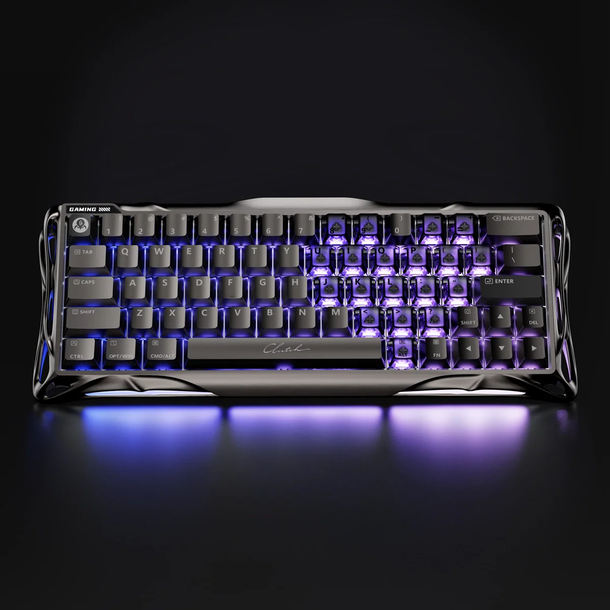
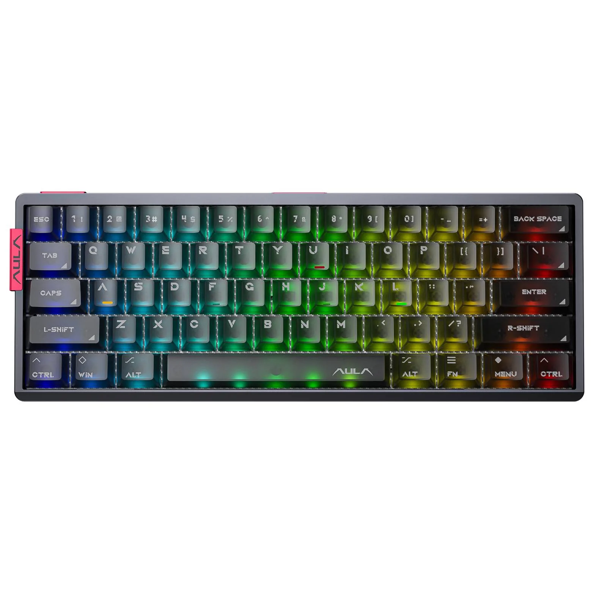

EQUIPAMIENTO PRO

Gravastar Mercury V60 Pro Edition
Ver detalles
Es bonito el teclado.

Aula AG60 Pro
Ver detalles
Tambien es bonito, pero es mejor.

ATK A9 Plus
Ver detalles
De los mejores mouses gamer del mercado en 2026.

Scyrox V8
Ver detalles
Mejor que el mouse anterior, nada mas que agregar.

KZ ZAR Pro
Ver detalles
De los mejores auriculares gamer del 2026.

QCY H3 Pro
Ver detalles
Son buenos audifonos de diadema del 2026.